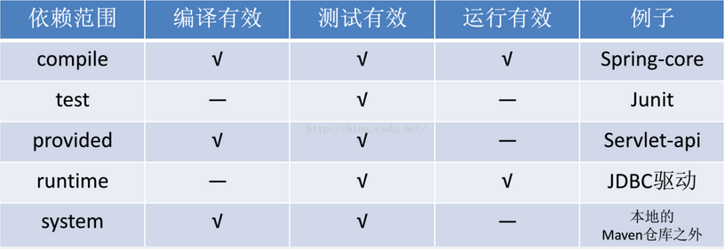

maven项目的依赖关系主要分为三种：依赖，继承，聚合。
依赖
依赖关系是最常用的一种，就是你的项目需要依赖其他项目，比如Apache-common包，Spring包等等，子module之间也可以互相依赖，比如childB依赖childA:1
2
3
4
5
6
7<dependencies>
<dependency>
<groupId>com.tl.business.service</groupId>
<artifactId>business-service-core</artifactId>
<version>1.0.0</version>
</dependency>
</dependencies>
任意一个外部依赖说明包含如下几个要素：groupId, artifactId, version, scope, type, optional。其中前3个是必须的。
scope作用域比较：
compile 是默认的范围,果没有提供一个范围，那该依赖的范围就是编译范围。编译范围依赖在所有的classpath中可用，同时它们也会被打包;
provided 例如javax.servlet-api，当你希望你的应用服务器或者servlet容器提供，这样该依赖不会被打包，就不会出现jar重复冲突的问题；
test 范围依赖在编译和运行时都不需要，它们只有在测试编译和测试运行阶段可用;

继承
继承就是避免重复，maven的继承也是这样，它还有一个好处就是让项目更加安全。项目之间存在上下级关系时就属于继承关系。
父项目的配置如下：1
2
3
4
5
6
7
8
9<dependencyManagement>
<dependencies>
<dependency>
<groupId>javax.servlet</groupId>
<artifactId>servlet-api</artifactId>
<version>2.5</version>
</dependency>
</dependencies>
</dependencyManagement>
子pom如果需要引用该jar包，则直接引用即可！不需要加入1
2
3
4
5
6
7
8
9
10
11<dependencies>
<dependency>
<groupId>javax.servlet</groupId>
<artifactId>servlet-api</artifactId> <!--此处不再需要verison了！-->
</dependency>
<dependency>
<groupId>junit</groupId>
<artifactId>junit</artifactId>
<scope>test</scope> <!--当然也可以加入只在这个子模块中用到的jar包-->
</dependency>
</dependencies>
父项目在dependencies声明的依赖，子项目会从全部自动地继承。而父项目在dependencyManagement里只是声明依赖，并不实现引入，因此子项目需要显示的声明需要用的依赖。如果不在子项目中声明依赖，是不会从父项目中继承下来的；
只有在子项目中写了该依赖项，并且没有指定具体版本，才会从父项目中继承该项，并且version和scope都读取自父pom另外如果子项目中指定了版本号，那么会使用子项目中指定的jar版本。
聚合
maven的多模块管理也是非常强大的。一般来说，maven要求同一个工程的所有模块都放置到同一个目录下，每一个子目录代表一个模块，比如：
Parent
—— childA(business-service-core)
— pom.xml
—— childB(business-service-web)
— pom.xml
—— pom.xml(business-service)
父模块：1
2
3
4
5<groupId>com.tl.business.service</groupId>
<artifactId>business-service</artifactId>
<modelVersion>4.0.0</modelVersion>
<packaging>pom</packaging>
<version>1.0.0</version>
1 | <modules> |
这样只是告诉maven编译器，在读取parent的pom文件时去找到childA和childB，但还是会分别去编译他们引入的依赖。这样就会导致pom文件引入的包重复！！！
于是我们引入了”继承”的概念，也就是形成”父子”关系，所以继承与聚合常常会一起使用。
父pom写好了，子pom就通过1
2
3
4
5<parent>
<artifactId>business-service</artifactId>
<groupId>com.tl.business.service</groupId>
<version>1.0.0</version>
</parent>